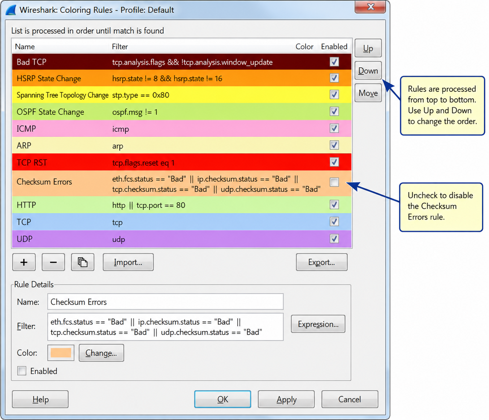
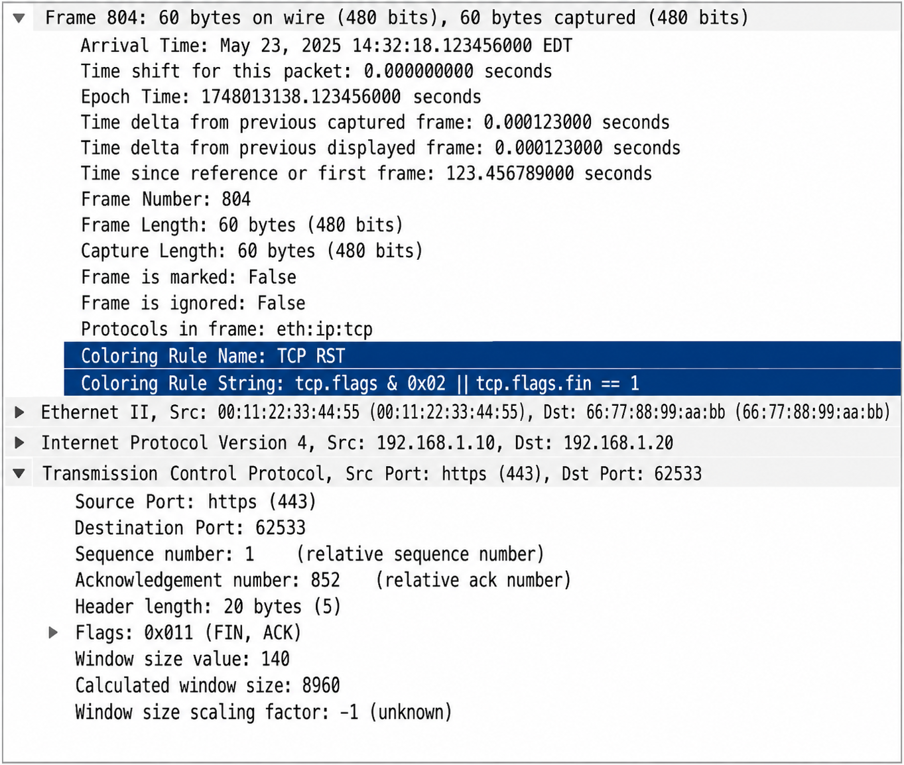
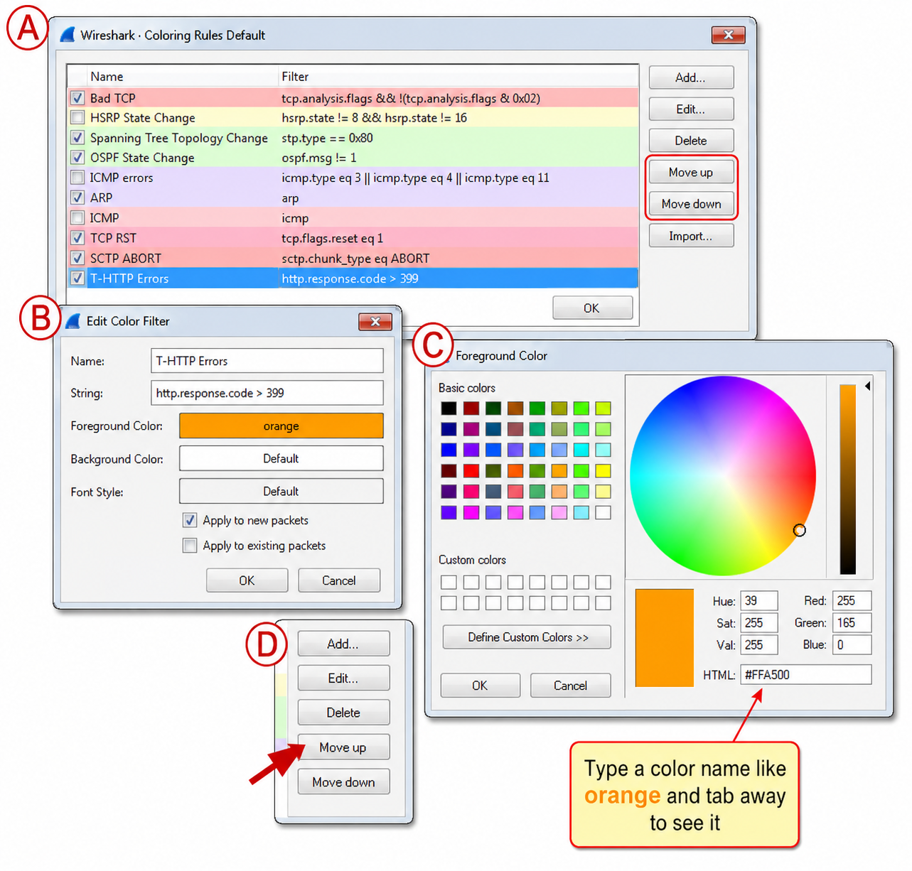
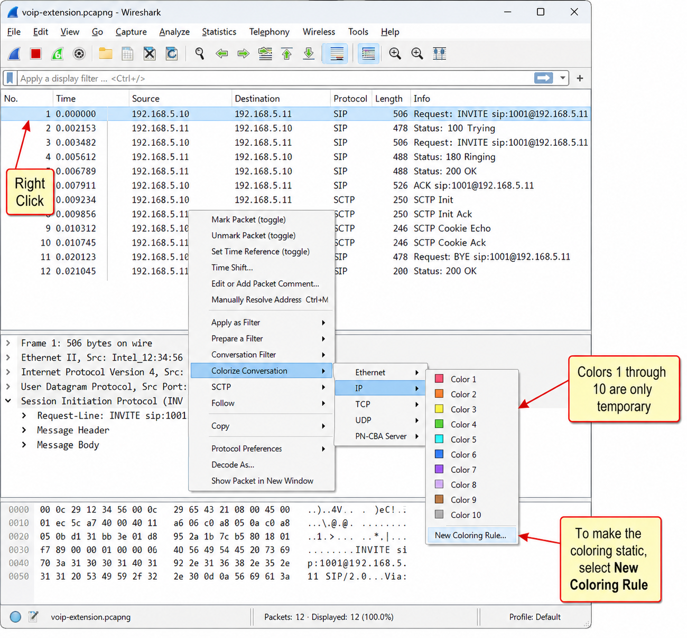
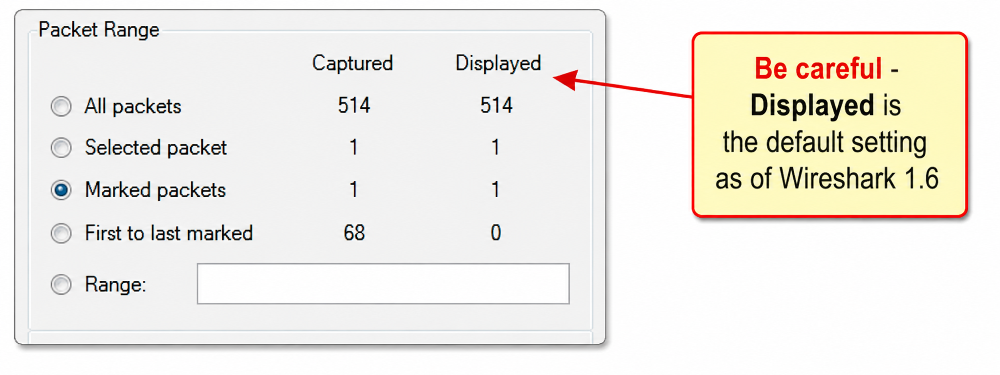
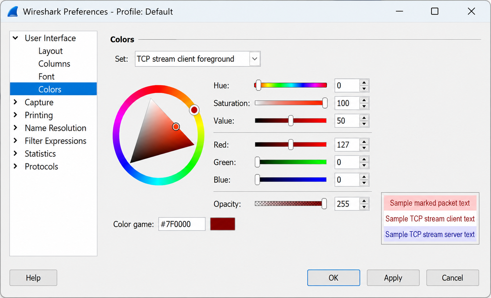
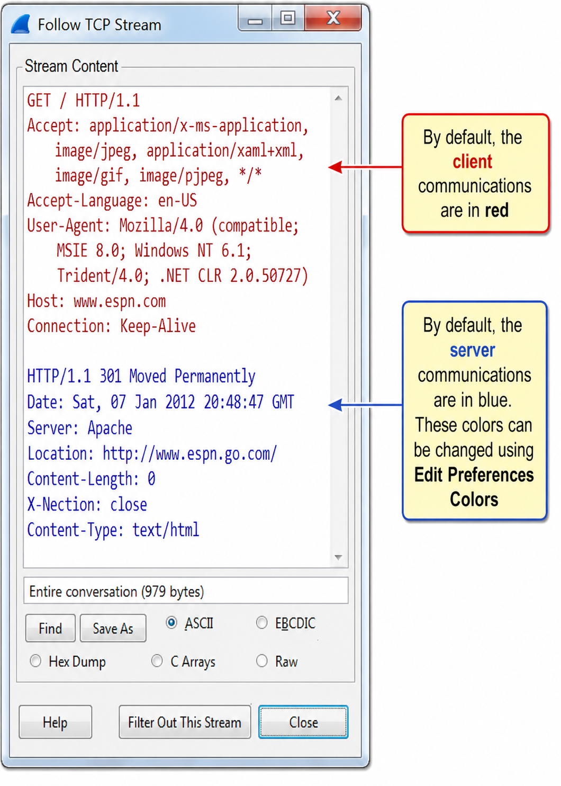
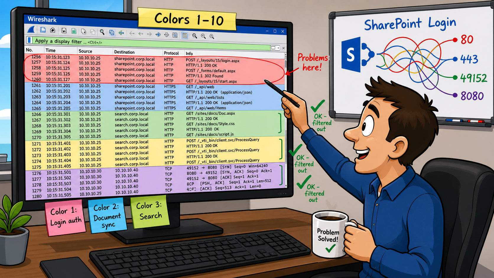

Wireshark ships with predefined coloring rules — one is “Bad TCP” and another is “HTTP.” If a packet is an HTTP response that also contains a TCP retransmission, which coloring rule will apply, and why? What underlying mechanism determines which rule wins?
Checksum offloading causes your own outbound packets to appear with invalid checksums. If the Checksum Errors coloring rule is enabled, how does this mislead the analyst, and what is the correct fix?
Use Colors to Differentiate Traffic Types
Colorization can be a very effective tool to locate and highlight packets of interest. You can choose to colorize packets that indicate error conditions, contain evidence of a network scan or breached host, etc.
Wireshark contains several predefined coloring rules in the default coloring rules file (colorfilters) that resides in the Global Configurations directory. When you edit the coloring rules file, the new colorfilters file is saved in your Personal Configurations directory. If you create and work in a new profile, another colorfilters file is saved in that profile’s directory.
The following lists some of the predefined coloring rule string values:
| Filter String | Rule Name / Description |
|---|---|
tcp.analysis.flags && !tcp.analysis.window_update | Bad TCP — retransmissions, out-of-order packets, Duplicate ACKs, etc. |
hsrp.state !=8 && hsrp.state != 16 | HSRP State Change (Hot Standby Router Protocol state changes) |
stp.type==0x80 | Spanning Tree Topology Change |
ospf.msg !=1 | OSPF State Change (routing state changes) |
icmp.type eq 3 || icmp.type eq 4 || icmp.type eq 5 || icmp.type eq 11 || icmpv6.type eq 1 || icmpv6.type eq 2 || icmpv6.type eq 3 || icmpv6.type eq 4 | ICMP errors (destination unreachable, Source Quench, Redirect, Time Exceeded) |
arp | ARP (all ARP traffic) |
icmp || icmpv6 | ICMP (all ICMP; ICMP errors rule takes precedence because it is higher in the list) |
tcp.flags.reset eq 1 | TCP RST (connection refusal or termination packets) |
(!ip.dst==224.0.0.0/4 && ip.ttl < 5 && !pim) || (ip.dst==224.0.0.0/24 && ip.ttl != 1) | Low TTL (IP Time-to-Live value less than 5) |
Coloring rules require a name, a string (based on the display filter format), a foreground color and a background color.
Disable One or More Coloring Rules
By default, Wireshark colorizes the traffic based on the default set of coloring rules. Turn off colorization using the Colorize Packet List button on the Main Toolbar or select View | Colorize Packet List to toggle this setting off.
To disable a single coloring rule, click the Coloring Rules button on the Main Toolbar (between the Display Filter Window button and the Preferences button). Click on a coloring rule and click the Disable button. The coloring rule is not deleted—it is just disabled. If you want to delete a coloring rule, select the rule and click the Delete button.

Checksum Errors and Coloring Rules
In the trace file http-facebook.pcapng our client, 24.6.173.220, uses IP, UDP and TCP checksum offloading which will trigger the Checksum Errors coloring rule if checksum validation is enabled in the IP, UDP and TCP protocol preferences.
One coloring rule you may consider disabling is Checksum Errors as shown in Figure 104. If TCP, UDP and IP checksum validation is enabled and checksum offloading is used, packets sent from a system running Wireshark may trigger the Checksum Errors coloring rule. Checksum offloading is defined in Chapter 3: Capture Traffic.
colorfilters file lives in the Global Config directory; customizations save to Personal Config. Disable Checksum Errors rule if NIC checksum offloading is in use to avoid false alarms.You’ve built custom coloring rules for detecting suspicious traffic. A colleague on a different system needs them. What is the fastest way to transfer them, and what file name should you use by convention? Is the Export feature in the Coloring Rules window actually mandatory?
When you look at a packet and wonder “why is this packet orange?” — where exactly in Wireshark do you find the answer, and what two fields tell you the complete story?
Share and Manage Coloring Rules
You can easily share coloring rules using the Import or Export buttons in the Coloring Rules window. When you export a coloring rule, Wireshark prompts you for a file name. Wireshark uses the name colorfilters as the default name. If you want to share these rules with other users, consider using this name.
Coloring rules are contained in a text file. You can copy the desired coloring rule to another system—just like any other file. You don’t need to use the Import/Export feature in the Coloring Rules window.
Identify Why a Packet is a Certain Color
To determine why a packet is colored a certain way, examine its Frame section in the top of the Packet Details pane.
In Figure 105 we have expanded the Frame section of the packet. This packet is colored based on a coloring rule named TCP SYN/FIN that uses the string tcp.flags & 0x02 || tcp.flags.fin==1 (only the SYN bit is set to 1 or the FIN bit is set to 1).

Although coloring rules are not actual fields in a packet, you can still filter on them. Right click on either the coloring rule name or the coloring rule string to create a display filter based on these two elements.
Coloring Rules are Processed in Order Top to Bottom
Coloring rules are processed in order so you need to be careful when you create and rearrange coloring rules. For example, using the default coloring rules, an HTTP packet that contains a TCP retransmission will be processed by the Bad TCP coloring rule, not the HTTP rule because the Bad TCP coloring rule is listed above the HTTP coloring rule.
colorfilters file is plain text — copy it directly to share rules (no Export needed). To find why a packet is colored, expand the Frame section in Packet Details and look for [Coloring Rule Name] and [Coloring Rule String]. Right-click either field to build an instant display filter.You want HTTP 4xx and 5xx responses to scream at you with an orange background. Walk through the steps mentally: what field do you right-click, what filter string do you enter, and critically — what must you do after clicking OK to ensure this rule actually fires for those packets?
What is the single display filter expression that catches all HTTP error responses — both client errors (400–499) and server errors (500–599)?
Create a “Butt Ugly” Coloring Rule for HTTP Errors
Although Wireshark contains a number of default coloring rules, there are some packets that should be screaming at you to get your attention. HTTP errors would be a good example. Any HTTP response that contains a numerical code between 400 and 499 indicates a client error. HTTP responses between 500 and 599 indicates server errors.
Let’s go step-by-step to create a single coloring rule to call attention to HTTP error responses. Refer to Figure 106 to see the steps as you work through this process.
- Step 1: Open
http-espn2011.pcapng(available in the Download section of www.wiresharkbook.com) - Step 2: In the Packet List pane select Packet 9 (an HTTP response). In the Packet Details pane right click on the Hypertext Transfer Protocol line and choose Expand subtrees so you can see the “Status Code: 301” line.
- Step 3 (A): Right click on “Status Code: 301” and select Colorize with Filter | New Coloring Rule. Wireshark opens the Coloring Rules window and Edit Color Filter window. Your coloring rule string is filled out based on the field you selected.
- Step 4 (B): Enter T-HTTP Errors in the name field. Enter
http.response.code > 399in the string field. - Step 5 (C): Click the Background Color button. In the Color name field, type
orangeand click OK. Click OK to close the Edit Color Filter window and OK to close the Coloring Rules window. - Step 6 (D): Your coloring rule will be highlighted with a blue background. Click the Up or Down button to move your butt-ugly coloring rule to the top of the coloring rules list.
- Step 7: Open
http-500error.pcapng. If your “butt ugly” coloring rule is configured properly, packet 9 should match the rule.

http.response.code > 399. 400–499 = client errors; 500–599 = server errors. Always move the new rule to the TOP — a bottom-of-list rule will never fire if any default rule matches first.There are 17 TCP connections in a busy trace file. You right-click and apply Color 1 to the first conversation, Color 2 to the second, and so on. You close the file and restart Wireshark. When you re-open the file, are the conversation colors still there? What about if you never restarted Wireshark but simply re-opened the file?
You mark 57 packets matching a display filter and 4 extra packets manually, then export using “Marked packets.” How many packets are in the resulting file? What happens to all marks if you click Reload?
Color Conversations to Distinguish Them
There are 10 temporary coloring options for conversations. Right click on a packet in the Packet List pane and select Colorize Conversation. Choose the conversation protocol to temporarily color a specific conversation as shown in Figure 107. The coloring rule remains in effect the next time you open the trace file, but it will not be in effect when you restart Wireshark.

To remove the conversation colorization, select View | Reset Coloring 1-10.
Temporarily Mark Packets of Interest
You can mark packets by right clicking on the packet and selecting Mark Packet (toggle). Unmark the packet using the same step. Packet marking is useful to temporarily identify packets of interest.
You can also use several accelerator keys (keyboard shortcuts) to mark packets and move between marked packets:
| Shortcut | Action |
|---|---|
Ctrl+M | Mark Packet (toggle) |
Shift+Ctrl+N | Find Next Marked Packet |
Shift+Ctrl+B | Find Previous Marked Packet |
By default, Wireshark colors marked packets with a black background and white foreground. You can change the default coloring in Edit | Preferences | Colors as shown in Figure 109.
Use Packet Marking to Save Non-Contiguous Packets
Marking packets also allows you to save specific non-contiguous packets or ranges of packets between marked packets. For example, if you want to save packets 1, 3, 7 and 9 of a trace file, simply mark those packets. When saving the trace file, select to save only the marked packets.
To clear marking, select Edit | Unmark All Displayed Packets or click the Reload button on the Main Toolbar. To invert the marked and unmarked packets, select Edit | Toggle Marking of All Displayed Packets.
The option for saving marked packets is shown in Figure 108. In this figure, Wireshark indicates that we have marked four packets. We have selected to save just those marked packets. To save just the marked packets into a separate trace file, select File | Export Specified Packets and check Marked packets. Enter the new file name and click Save.

When you follow a TCP stream, Wireshark colors data red and blue. What does each color represent? Is the “client” always the host with the lower IP address or lower port number? How does Wireshark actually determine which side is the client?
The stream color Preference setting is labeled “Sample TCP stream client text” and “Sample TCP stream server text.” If you follow a UDP or SSL stream, what colors will be used for each direction?
Alter Stream Reassembly Coloring
When you right click on a packet and select Follow UDP stream, Follow TCP stream or Follow SSL stream, the streams are colorized to identify packets sent from a client (the device initiating the connection or conversation) and packets sent from a server. For more information on following UDP, TCP or SSL streams, refer to Chapter 10: Follow Streams and Reassemble Data.
You can change the stream coloring using Edit | Preferences | (User Interface) Colors as shown in Figure 109. Although the stream coloring lists only Sample TCP stream client text and Sample TCP stream server text, these colors are also used for UDP stream reassembly and SSL stream reassembly—the setting can be interpreted simply as “stream client text” (the host that sent the first packet in the stream) and “stream server text” (the host that received the first packet in the stream).

By default, a light red background and red font identify traffic sent by the client and light blue background and blue font identify traffic sent by the server. The separate parts of a reassembled TCP stream are marked in Figure 110.

Case Studies
Colorization can help in the analysis of very complex communications. For example, SharePoint networks use numerous connections and numerous port numbers. Wading through the communications from a SharePoint client can be overwhelming and rekindle that “needle in the haystack” feeling.
During a recent onsite analysis and training session we analyzed a login sequence from a host that was a SharePoint client. In order to distinguish between the various connections made from the client, we systematically colorized the various conversations to tell them apart.
This colorization helped us quickly see which connections were established first and which connections had problems. We could slowly filter out conversations that didn’t have problems—we were left with the conversations that we needed to focus on. Do a bit of “googling” to see how many ports are used in a typical SharePoint environment.

Colorization can be used to distinguish separate conversations, specific packet types and unusual traffic. A set of predefined coloring rules is included with Wireshark. Create custom coloring rules to improve your ability to identify unusual traffic in your analysis environment. The predefined coloring rules are maintained in the colorfilters file in the Wireshark Global Preferences directory. New or customized coloring rule settings are maintained in the colorfilters file in your Personal Configuration folder. You can import, export and clear (return to default) your coloring rules. Coloring rules are automatically applied to each packet as it is displayed (if packet coloring is enabled). Other colorization, such as conversation colorization and marked packets are applied on a temporary basis only. To identify the coloring rule applied to any packet, expand the Frame section in the Packet Details pane and examine the [Coloring Rule Name] and [Coloring Rule String] sections. You can mark packets of interest and save just the subset of marked packets, if desired. You do not have the option to save packets based on any other colorization. Reassembled UDP, TCP and SSL streams are colorized based on the Preferences settings. By default, data sent from clients is red and data from servers is blue. If desired, this can be changed.